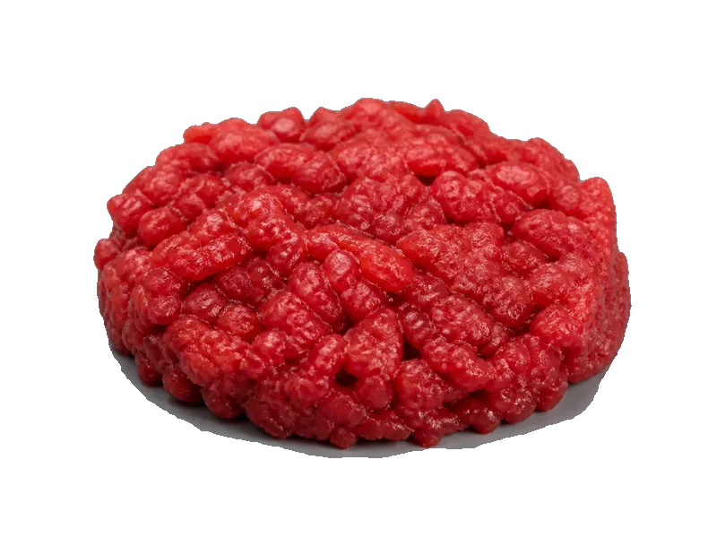

Polskie obiadki
Tatar wołowy
Tatar wołowy: 20 g białka, 195 kcal, 2 g węglowodanów i 12 g tłuszczu na 100 g. Kategoria: Polskie obiadki.
Kalorie195 kcalna 100 g
Białko / proteiny20 g
Węglowodany2 g
Tłuszcz12 g
Cena (szac.)~1,54 złza 100 g
Ceny zaktualizowano: maj 2026 (szacunek — ceny w popularnych supermarketach)
Porcja: porcja (120g)
| Kalorie | 234 kcal |
|---|---|
| Białko | 24 g |
| Węglowodany | 2.4 g |
| Tłuszcz | 14.4 g |
| Cena (szac.) | ~1,85 zł |
Szczegółowe składniki odżywcze na 100 g
| Wartość energetyczna (kalorie) | 195 kcal |
|---|---|
| Białko (proteiny) | 20 g |
| Węglowodany | 2 g |
| Tłuszcz | 12 g |
| Tłuszcze nasycone | 5 g |
| Tłuszcze nienasycone | 7 g |
| Witaminy i minerały | Żelazo, Witamina B12, Tiamina (B1) |
| Współczynnik kcal / 1 g białka | 9.8 |
| Cena produktu (szac. za 100 g) | ~1,54 zł |
| Cena za 100 g białka (szac.) | ~7,71 zł |